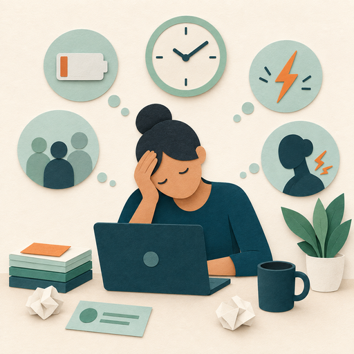
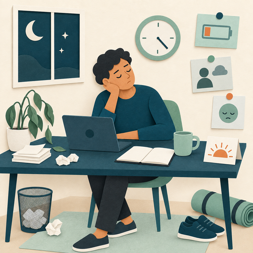

Cynicism
A persistently negative attitude toward the work.
Common signs may include changes in attitude, motivation, effectiveness, connection, or health.

Image slotA persistently negative attitude toward the work.
Feeling ineffective or unable to make progress.
Isolation from coworkers, family, or friends.
Physical illness or worsening physical symptoms.
Subtle signs may appear in energy, sleep, productivity, connection, self-care, or joy.
Trouble sleeping.
Feeling detached or emotionally distant.
Loss of joy in activities that were previously meaningful.
Many people notice a gradual change in energy, motivation, health, and connection to their work.
Signs may appear differently for different people. Select a card to see more.
Recognizing signs early creates space to respond before stress becomes more severe.

Image slotPay attention to changes in energy, motivation, health, and connection to work. Signs may look different for each person.
Learning to notice your own patterns and changes in the people you work with can make it possible to respond before stress becomes more severe.